Blog ·
Postavil som si drift hru cez AI. Takto vznikala.
Event Car Game (pôvodne Event Car Drift) je 3D hra, ktorú som si s AI postavil v prehliadači: parkovisko, tréning, dovoz, offroad až na vrchol hory, diaľnica z kokpitu, tajné preteky o Red Bull autá a nočná naháňačka s políciou. Tu je, ako presne vznikala, na čo sme prišli a čo som z nej vyhodil. Hrať sa dá priamo v mojom robOS.
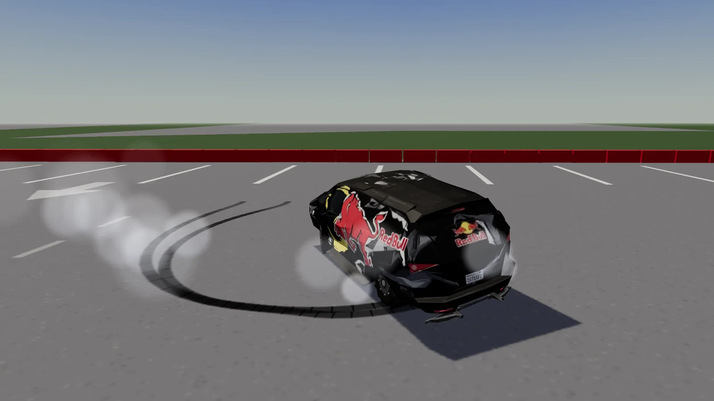
Hru si môžeš zahrať hneď. Otvor môj robOS, ťukni na appku Car Game a jazdi. Funguje na mobile aj na počítači a nič neinštaluješ. Mobil drž na šírku. Ak ju chceš na celú obrazovku, je aj samostatná.
Programátor nie som. Celú hru postavila AI a ja som jej hovoril, čo chcem, čo sa mi páči a čo nie. Tento článok je presný denník toho, ako sme to robili.
Začalo sa parkoviskom
Najprv len veľké parkovisko a jedno auto. Cieľ bol jediný: aby sa auto dobre driftovalo. Fyzika je „arkádová“, nie simulátor. Auto sa dá ľahko rozhýbať, šmyk je ľúbivý a dym a stopy po gumách ti hneď ukážu, čo robíš.
Celé to beží v prehliadači v jednom súbore. Používa knižnicu three.js na 3D, takže sa dá pustiť odkiaľkoľvek, bez inštalácie.
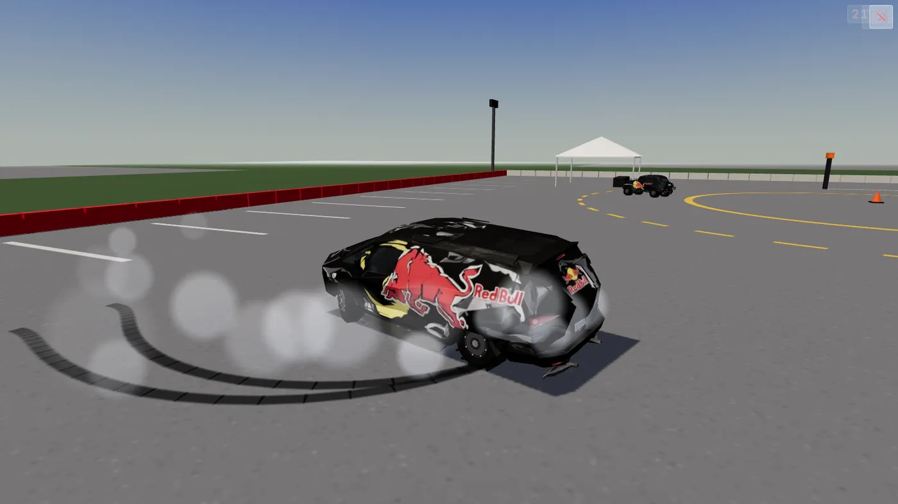
Dve autá, dva charaktery
Autá som nechcel kreslené z kociek. Chcel som, aby vyzerali ako tie skutočné, s ktorými jazdím v práci. Modely som nechal vygenerovať AI z fotiek a Claude ich potom vložil do hry. Každé auto má vlastné správanie:
- Zuborobrnená dodávka, V8 400 koní, 3,4 t. Pomalší rozjazd, ale dlhé a ladné šmyky.
- Suggavintage 4×4 diesel. Ľahšia, obratná a stvorená na offroad.
- ZvukV8 má vlastný zvuk motora a štart. Pre Suggu ešte hľadám diesel.
Na Sugge sme ladili najviac. Sugge sme napríklad pridali 7 % výkonu. Pri takýchto veciach AI nevie, aký má byť „správny pocit“ z jazdy. To musím odjazdiť ja a povedať jej to.
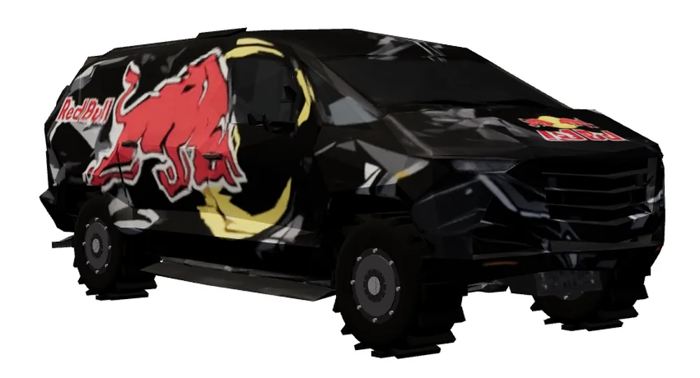
Menu, ktoré vyzerá ako garáž
Prvé menu bolo len zoznam tlačidiel. Napísal som, že chcem niečo lepšie, a AI navrhla nový vzhľad: karty s autami a siluetami, karty s režimami, tabuľku s menom auta a veľké tlačidlo ŠTART, ktoré ti hneď hovorí, čo spustíš. Auto vidíš živé za menu a prepínaš ho šípkami.
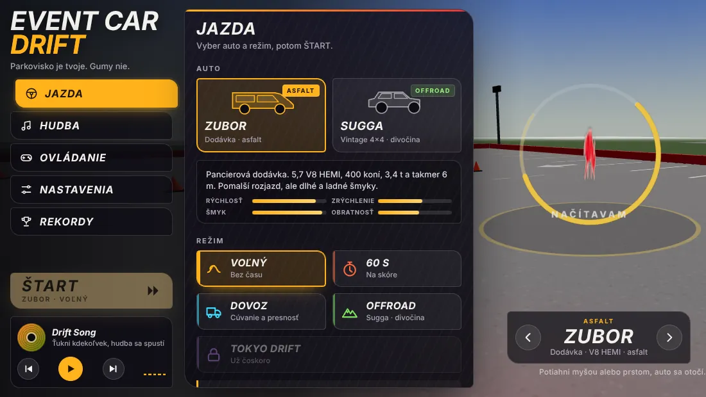
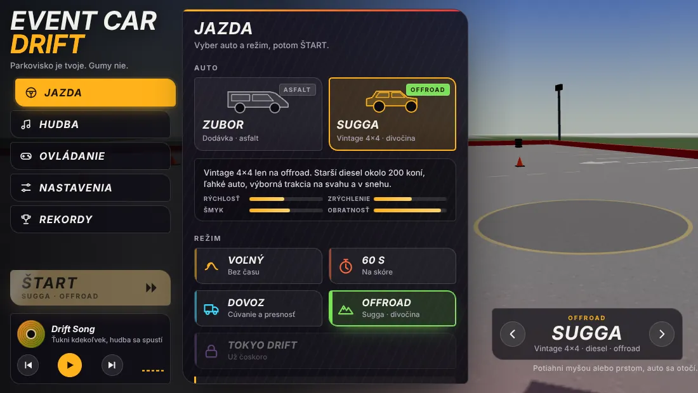
Parkovisko plné srandy
Keď bol drift dobrý, parkovisko mi pripadalo prázdne. Povedal som, že tam chcem veci, ktoré si človek užije. Pribudlo:
- pyramída zo sudov, ktorú sa oplatí rozbiť,
- veľké plážové lopty, ktoré môžeš tlačiť autom,
- radar, ktorý ti zmeria rýchlosť a zapamätá si najlepší výsledok,
- zaparkované druhé auto. Keď jazdíš na Zuborovi, na parkovisku stojí Sugga. A naopak: na offroade na štarte stojí Zubor.
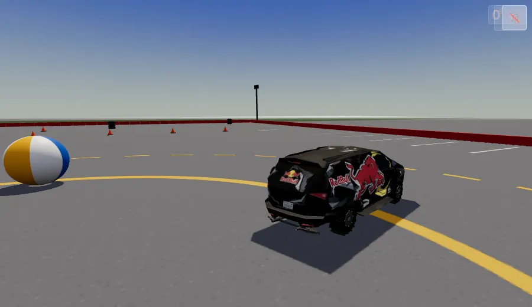
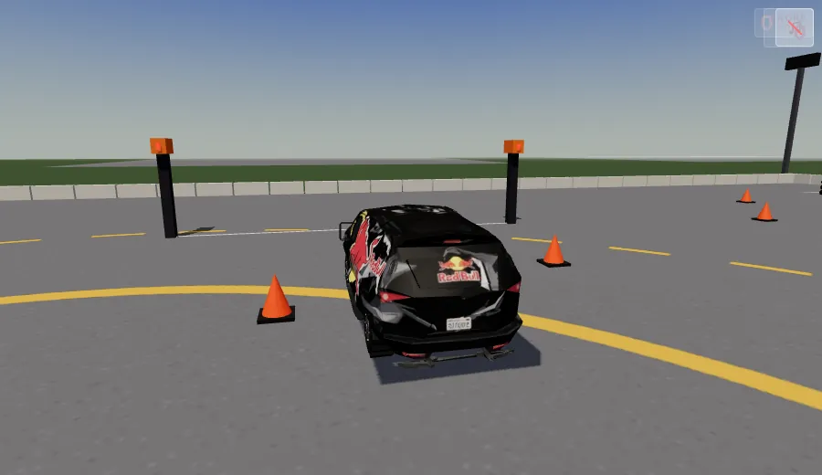
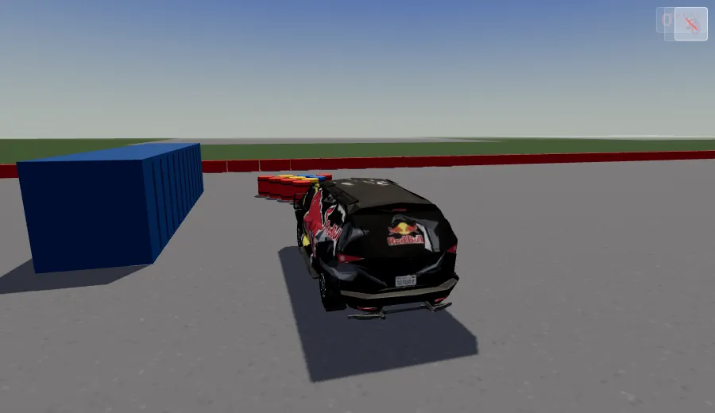
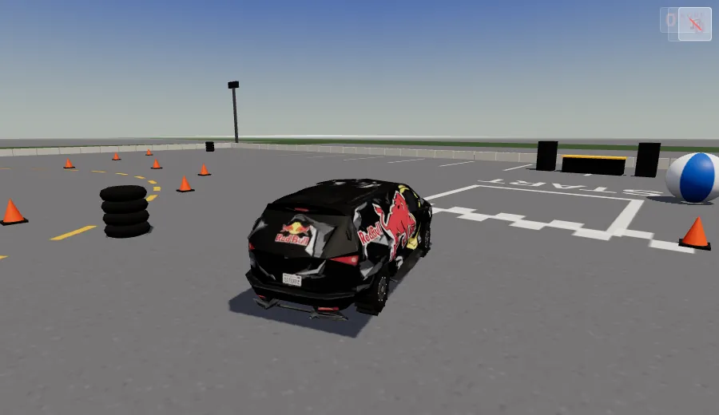
Dym, ktorého bolo moc
Prvý dym vyzeral dobre na obrázku, ale v hre ho bolo príliš. Napísal som jej presne to: že je tam podľa mňa veľa dymu. AI ho zmenšila a zredukovala. Aktuálny dym sú mäkké gule, ktoré sa vždy otáčajú ku kamere a vznikajú za pneumatikami a mimo nich, nie na nich. Takto vyzerá ako skutočný šmyk, nie ako hmla okolo auta.
DOVOZ: úlohy v neónovom meste
Voľná jazda ťa po čase omrzí. Tak vznikol režim DOVOZ: s dodávkou prechádzaš bránami s úlohami (slalom, kyvadlá, kruhy) a hľadáš presnosť. Svet je neónový a farebný. Na jednom mieste tu pôvodne stáli obrovské huby. Vyzerali zaujímavo, ale pri jazde mi zakrývali celý výhľad. Povedal som, aby šli preč, a nahradili ich ružové stĺpiky na neónový slalom.
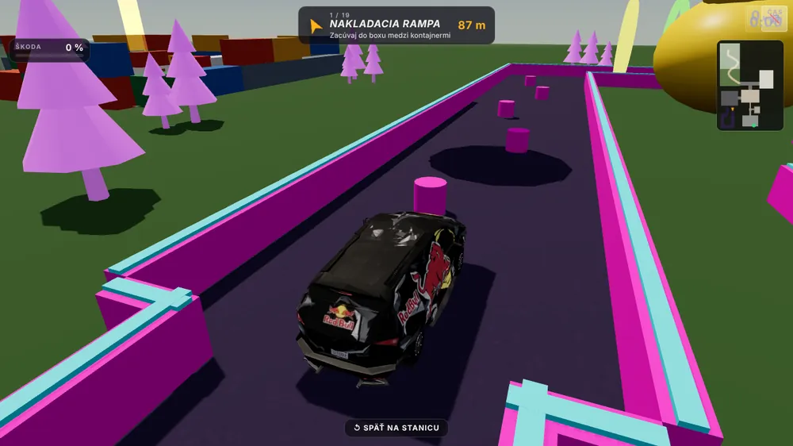
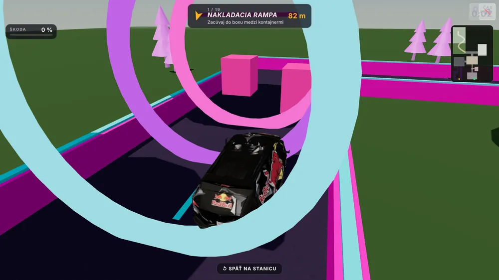
OFFROAD: z lúky až na vrchol
Najväčšia časť hry je offroad so Suggou. Je to jedna dlhá trasa s 25 bránami a šiestimi svetmi za sebou. Začína sa na lúke, ide cez močiar, kaňon a zamrznuté jazero, potom hore zasneženým svahom až na vrchol. V každej zóne sa mení povrch, takže sa auto správa inak na bahne, ľade a v hlbokom snehu.
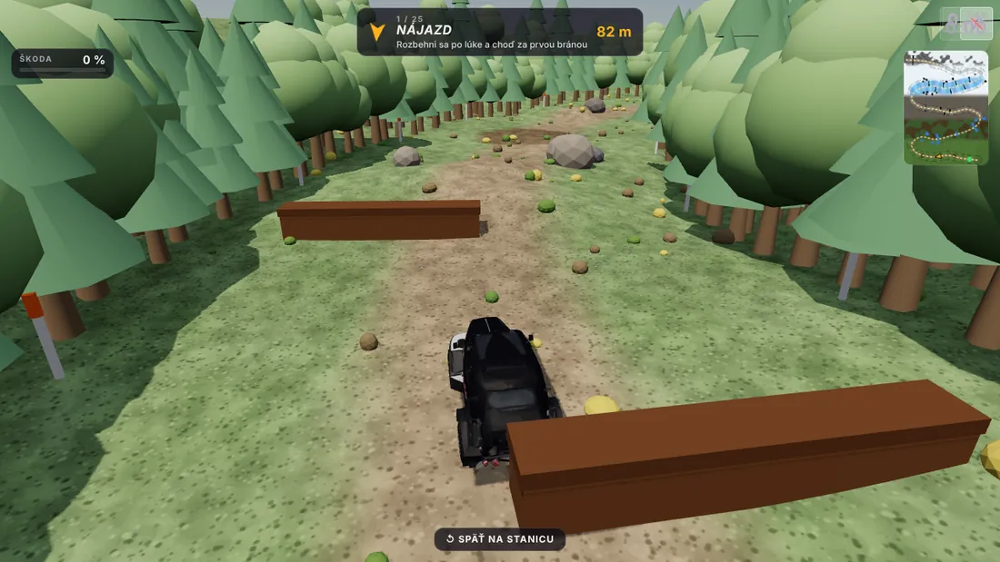
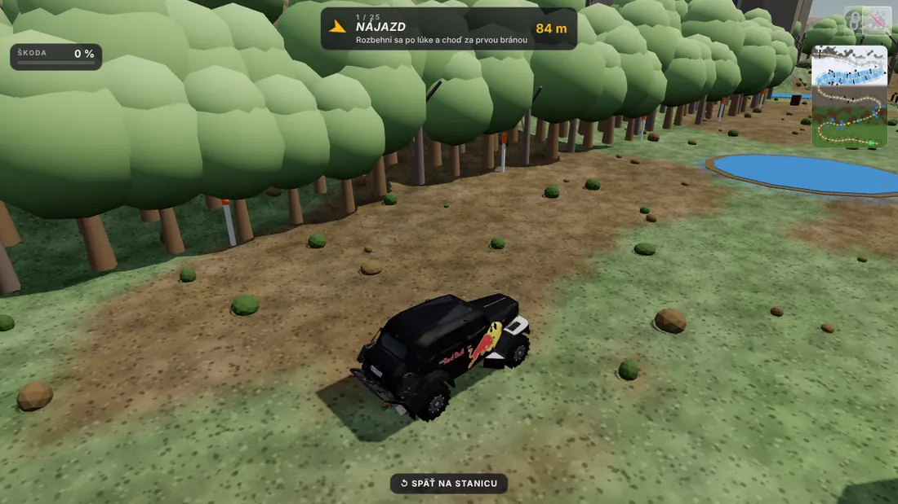
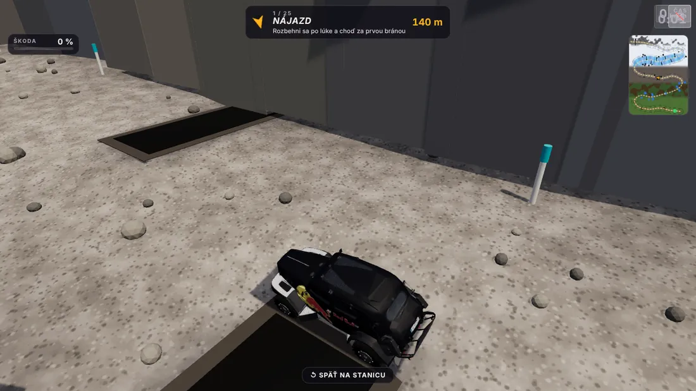
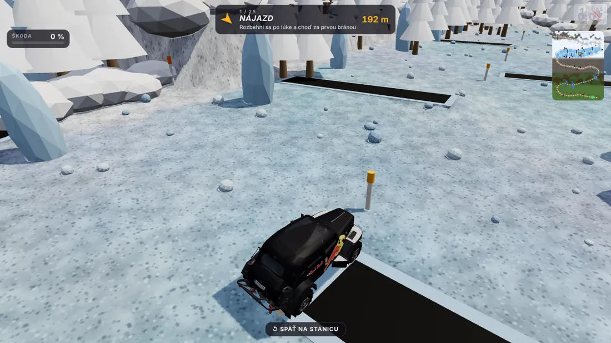
Vrchol, ktorý som dal prerobiť celý
Najviac som sa naučil na poslednej zóne. Pôvodne to bol „uletený svet“ s plávajúcimi ostrovmi, UFO a neónmi. Keď som tam prvýkrát došiel so Suggou, auto sa zasekávalo, vtlačilo ma do steny a nebolo nič vidieť. Napísal som, že toto nemôžeme nechať takto a že to musí byť stále realistické.
AI to celé zmazala a postavila nanovo ako reálny horský vrchol: štrková cesta, skaly, sneh, slalom medzi balvanmi, horská chata, kríž a kamenná mohyla, vysielač a veterná turbína. Na konci je cieľový oblúk s vlajkou. Potom prešiel celú trasu skriptovaný virtuálny šofér a kontroloval, že sa dá prejsť bez nárazu až do cieľa.
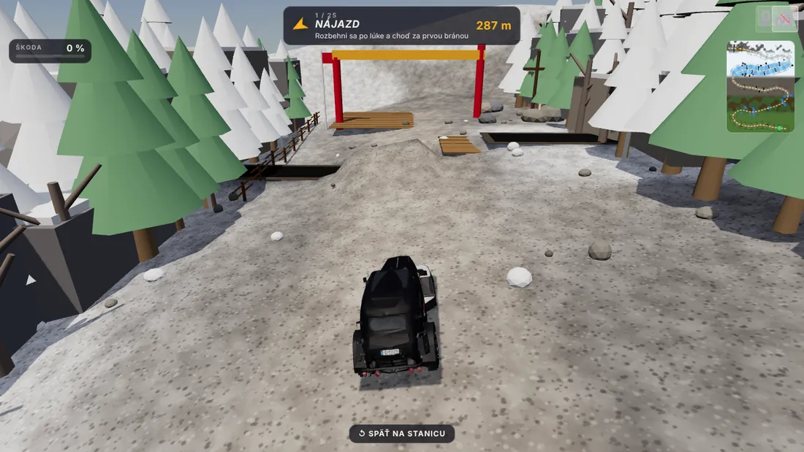
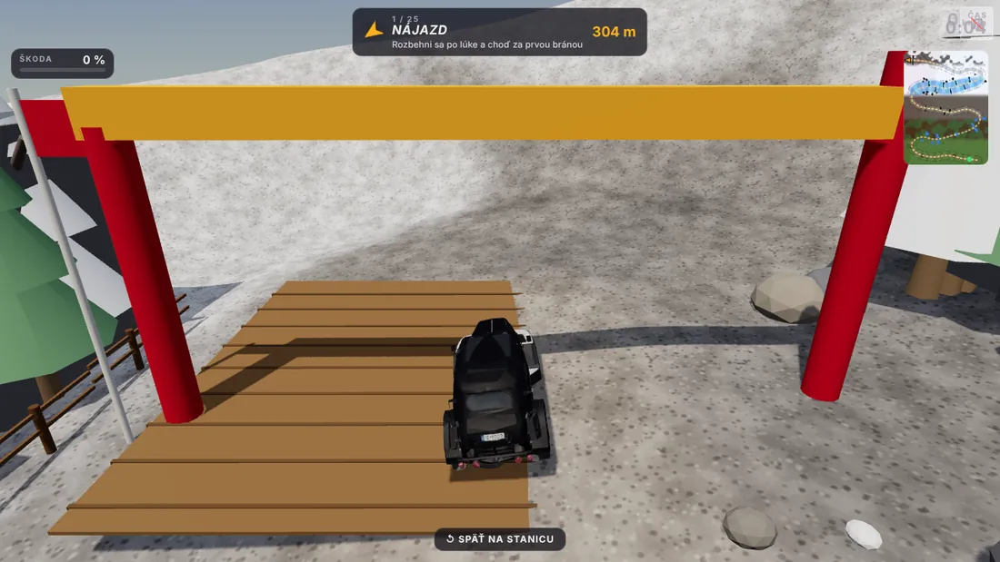
Ako sme sa rozhodovali
Rovnako ako pri iných mojich projektoch: technické veci rozhoduje Claude, pri hernom a kreatívnom rozhodujem ja. Ja som hru jazdil, hovoril, čo mi vadí, a on to opravil. Moje správy boli typu „veľa dymu“, „nič tam nevidím“ alebo „toto treba prerobiť úplne“. Nikdy som nehovoril, ako to naprogramovať.
- Hra má už 46 verzií. Po každej som si ju zahral a povedal, čo sa mi páči a čo nie.
- Vyhadzovať je rovnako dôležité ako pridávať. Huby, plávajúce ostrovy aj UFO šli preč, keď prekážali.
- Najprv jedna vec, potom ďalšia. Parkovisko, auto, menu, módy, offroad. Nikdy nie všetko naraz.
Z hry do robOS
Hra pôvodne žila ako jedna stránka. Keď som ju vyhlásil za hotovú, spravili sme z nej appku v mojom robOS, malom telefóne priamo na tomto webe. Pribudla do neho ikona v rovnakom štýle ako Event Hub a hra sa otvorí vnútri telefónu.
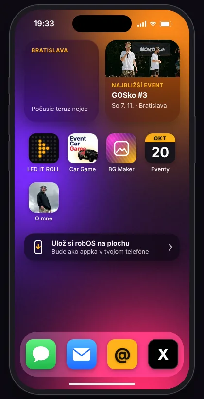
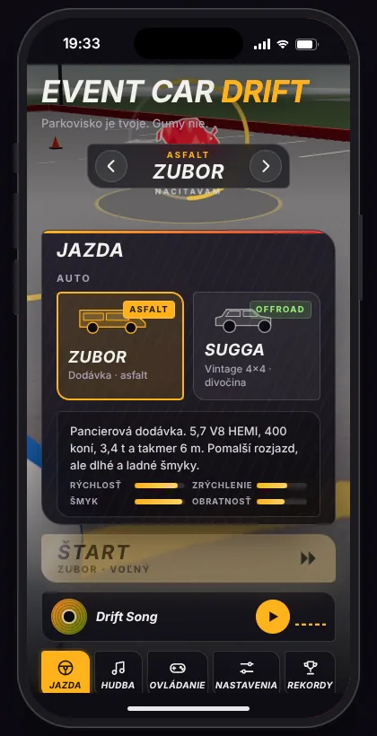
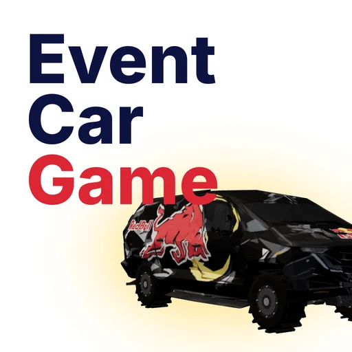
Aktualizácia: z driftu je tréning
Deň po zverejnení som hru otočil. Drift na parkovisku ostal, ale jadrom je teraz TRÉNING: 27 levelov od rozjazdu a brzdenia cez slalomy, cúvanie a osmičku až po mesto a divočinu. Jedna hviezda odomkne ďalší level, tri sú za rýchly a čistý prejazd.
Prerobil som aj fyziku. Zubor má 3,5 tony a vysoké ťažisko, tak sa teraz podľa toho aj správa: dlho brzdí a pri brzdení ide nosom dole, v zákrute sa celá karoséria nakloní a keď ho pri rýchlosti rozkývaš vľavo-vpravo, zdvihne kolesá a prevráti sa na bok. Kto brzdí v zákrute, tomu ide zadok von. Presne to, čo s ním zažívam v práci, len v arkádovej verzii.
Aktualizácia 24. októbra: diaľnica, tajné autá a polícia
Za pár dní sa hra rozrástla na celú zbierku režimov. Tu je to hlavné, v poradí, ako to vznikalo.
Diaľnica z pohľadu vodiča. Nový režim, v ktorom sedíš v kokpite Zubora. AI som ukázal fotky interiéru skutočného auta, takže je tam prístrojovka s tachometrom a otáčkomerom, spätné zrkadlá a volant. Jazdíš po trojpruhovej diaľnici s premávkou a máš prejsť 8 km. Prvá verzia mala smerovky, ručné radenie a pokuty za predbiehanie zblízka. Povedal som, že to chcem arkádovejšie, tak šlo všetko preč a pokuta ostala len za náraz. Do áut sa dá búrať, len ti ubúda karoséria.
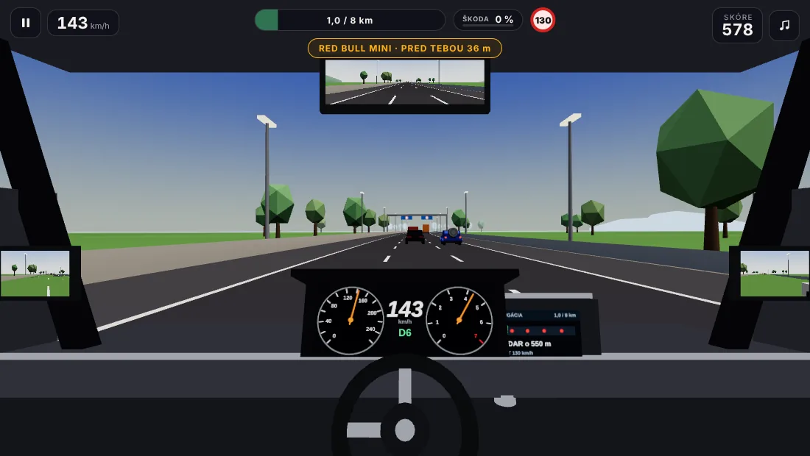
Tajné preteky o autá. Na diaľnici sa občas zjaví špeciálne Red Bull auto a začnú sa preteky. Keď ho predbehneš alebo vybúraš, dostaneš ho ako darček a odomkne sa ti vo všetkých svetoch, nielen na diaľnici. Je ich šesť: Red Bull Mini s veľkou plechovkou na zadku, DJ Jeep s bedňami, bugina, rozvozový truck, Unimog a KTM X-Bow. Ukázal som AI fotky všetkých a ona ich postavila z jednoduchých kociek, takže sú to len približné verzie. Kým ich nezískaš, vidíš v menu iba siluetu s otáznikom.
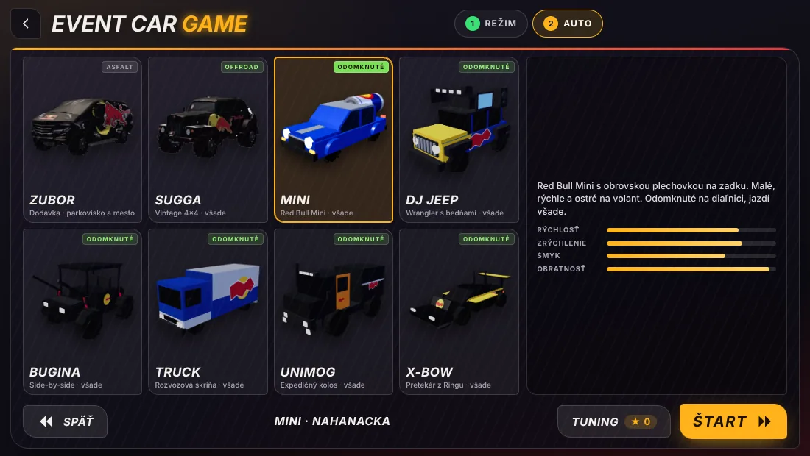
Nočná naháňačka s políciou. Nový režim na diaľnici v noci. Policajti ťa dobiehajú zozadu a keď sa ti držia pri aute, plní sa ukazovateľ zadržania. Keď sa naplní, koniec. Ujdeš tak, že pôjdeš rýchlejšie ako oni, alebo ich odstrčíš do boku. Do bežnej diaľnice ich nechcem, tak majú vlastný režim. Vyváženie som skúšal virtuálnymi šoférmi, ale či sa to dá reálne vyhrať, to musím ešte odjazdiť sám.
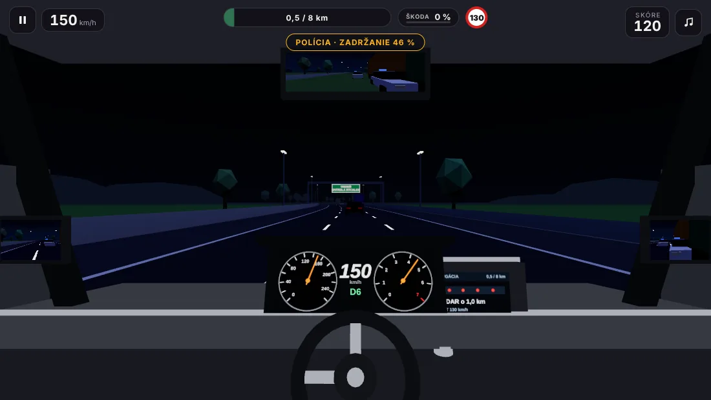
Misie ako samostatné režimy. DOVOZ a DIVOČINA už nie sú medzi tréningovými levelmi, ale sú to celé hry samy osebe. Sugga je odomknutá všade. Na DOVOZe nevozíš žiadny náklad, všetko máš v aute. Pred štartom preletí kamera nad trasou, aby si videl, kam ideš, a brány sú vyššie a lepšie viditeľné. Posledný ľadový kopec, na ktorý som so Zuborom nevyšiel, dostal pomoc.
A ešte drobnosti, ktoré robia hru živšou:
- Kaskadérske body za jazdu na dvoch kolesách, otočku o 360° a tesné obiehanie.
- Tuning za hviezdy z levelov: brzdy, pneumatiky a motor, každé v troch stupňoch.
- Počasie a noc pre každú mapu: deň, noc, dážď, hmla alebo náhodne.
- Vibrácie v mobile podľa povrchu a pri náraze.
- Ovládanie na mobile: posuvník riadenia sa sám vracia do stredu podľa rýchlosti, jedno tlačidlo plynu, brzda, ručná a volič P R N D.
Jedna chyba bola aj vtipná. Vybral som si Zubora, ale hra mi pustila veľký Red Bull truck. Zapamätala si totiž niečo z predchádzajúcej jazdy. Povedal som to AI, ona chybu našla a teraz sa vždy spustí auto, ktoré máš vybrané.
Menu bez posúvania. Veľa ráz som v menu musel scrollovať, tak ho AI prerobila. Najprv je hlavná obrazovka (Hrať, Nastavenia, Hudba, Ovládanie, Rekordy), potom vyberieš režim a potom auto. Všetko sa zmestí na šírku mobilu aj na počítač, takže nič nehľadáš.
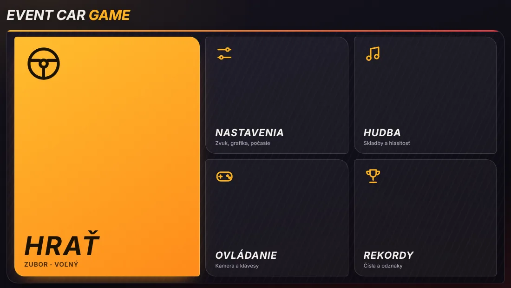
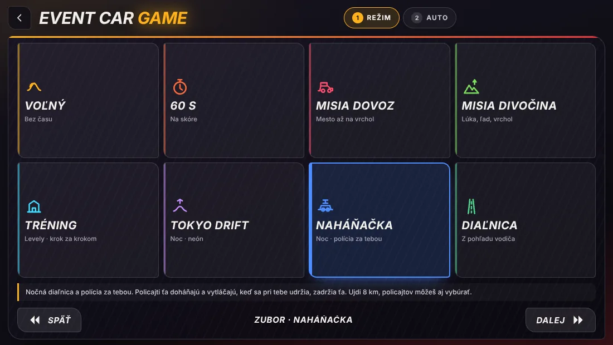
Čo ešte príde
- zvuk dieselu pre Suggu
- Red Bull formula a ďalšie vtipné autá
- ďalšie trasy a levely, aj pre naháňačku
Autá v hre vyzerajú ako tie, s ktorými jazdím v práci. Je to moja vlastná zábava a nič na nej nezarábam. Odomykateľné Red Bull autá sú moje jednoduché verzie podľa fotiek. Ak by to niekomu prekážalo, autá z hry vyberiem.
Chceš si niečo také vyskúšať sám? Na 3-hodinovej session ťa to naučím na tvojich vlastných veciach.
15 min hovor zadarmo